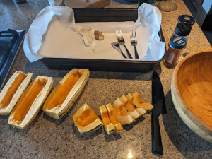
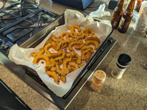

Delicata Squash and Miso
 
Cooking time: 40 min
Ingredients:
Delicata squash, sesame oil, miso paste, lemon, ginger, salt, togarashi or roasted sesame seeds
How to make the squash:
- Preheat oven to 425F
- Slice the squash into whatever shape (discard the seeds)
- Coat with sesame oil
- Roast for about 15 min, flip over the squash and roast for 15 more minutes
How to make the miso marinade: * In a boal: mix miso, lemon, grated ginger, and some water * Brush one side of the roasted squash with the mix * Roast for another 10 min * Add salt, togarashi, sesame seeds
Links: * Similar Recipe * Similar Recipe